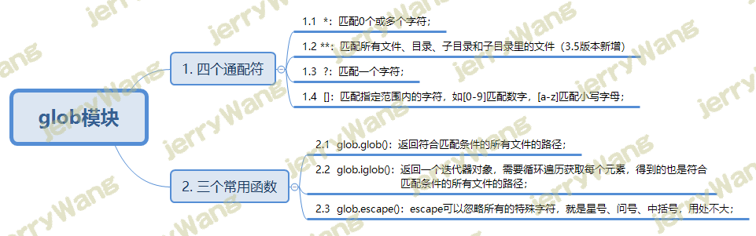
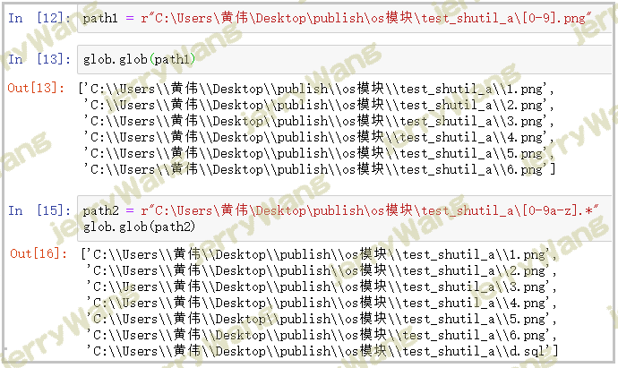
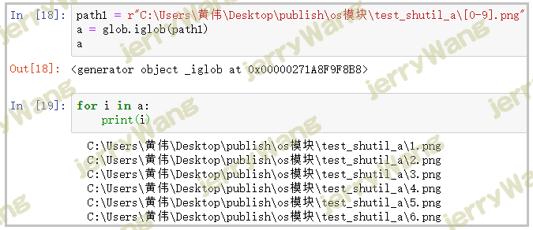
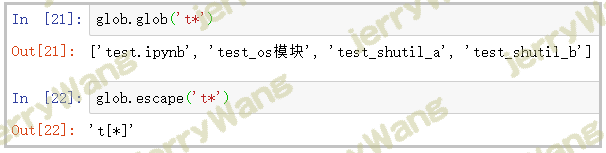

python查找文件fnmatch、glob模块
不墨迹时间，直入正题看glob模块，fnmatch参考
python中可以使用 glob 模块实现快速查找文件
glob像是一个更强大版本的listdir()函数，支持使用模式匹配来搜索文件，其支持的通配符有：,匹配任意0个或多个字符；*，当recursive参数为True时会匹配0个或多个子文件夹（且只能用于匹配子文件夹）；?，匹配任意一个字符；[]，匹配指定范围内的字符，如[0-9]匹配任意数字。
若需要全局搜索，则需启用recursive递归参数为True。
1 | # 超着qqq目录下所有深层目录下的后缀为png的文件，单层目录recursive=False |
fnmatch
这篇文章主要分享的是python使用技巧查找文件，下面我们就来介绍针对python查找文件的相关内容，需要的小伙伴可以参考一下
标准库的fnmatch库专门用来进行文件名匹配，支持使用通配符进行字符串匹配。
- 1、fnmatch：判断文件名是否符合特定的模式；
- 2、fnmatchcase：判断文件名是否符合特定的模式，不区分大小写；
- 3、filter：返回输入列表中，符合特定模式的文件名列表；
- 4、translate：将通配符模式转换成正则表达式。
fnmatchcase函数与fnmatch函数几乎一样，只是在匹配文件名时会忽略文件名中字母的大小写。
filter函数与fnmatch函数比较类似，区别在于fnmatch每次对一个文件名进行匹配判断，filter函数每次对一组文件名进行匹配判断。filter 函数接受文件名列表为第一个参数，文件名模式为第二个参数，然后以列表的形式返回输入列表中所有符合模式的文件名。
1 | import os,fnmatch |
目前，我们要获取特定类型的文件列表，都是先通过os.listdir获取文件列表，然后通过使用fnmatch进行文件名模式匹配进行过滤。而在Python中还有更加简单的方式，即使用标准库的glob库。glob的作用相当于os.listdir加上fnmatch。使用glob以后，不需要调用os.listdir获取文件列表，直接通过模式匹配即可。
1 | import glob |
前面的例子都是查找某一个目录下的文件并通过模式匹配去选择自己需要的文件类型。在实际工作过程中，更有可能遇到的是查找某个目录及其子目录下的所有文件。例如查找某个目录及其子目录下的图片。可以使用os模块的walk函数。walk函数遍历某个目录及其子目录，对于每一个目录，walk返回一个三元组（dirpath, dirnames,filenames）。其中dirpath保存的是当前目录，dirnames是当前目录下的子目录列表，filenames是当前目录下的文件列表。
1 | # 其实了解glob模块，直接`** `递归匹配所有文件、目录、子目录 |
在遍历目录及其子目录时，如果想要忽略掉某一个子目录，可以直接修改三元组中的dirnames，即从dirnames列表中移除需要忽略掉的目录。
1 | if 'extest' in dirnames: |
glob
glob模块也是Python标准库中一个重要的模块，主要用来查找符合特定规则的目录和文件，并将搜索的到的结果返回到一个列表中。使用这个模块最主要的原因就是，该模块支持几个特殊的正则通配符，用起来贼方便，这个将会在下方为大家进行详细讲解。

支持4个常用的通配符
使用glob模块能够快速查找我们想要的目录和文件，就是由于它支持*、**、? 、[ ]这三个通配符，那么它们到底是 什么意思呢？
*：匹配0个或多个字符；
**：匹配所有文件、目录、子目录和子目录里的文件（3.5版本新增）；
?：代匹配一个字符；
[]：匹配指定范围内的字符，如[0-9]匹配数字，[a-z]匹配小写字母；
注意：这3个通配符的用法，将在讲函数的时候，一起带大家操作一遍； glob库中主要的3个函数
其实glob库很简单，只有3个主要函数供我们使用，它们分别是glob()、iglob()、escape()函数，因此学习起来特别容易。
glob.glob()：返回符合匹配条件的所有文件的路径；
glob.iglob()：返回一个迭代器对象，需要循环遍历获取每个元素，得到的也是符合匹配条件的所有文件的路径；
glob.escape()：escape可以忽略所有的特殊字符，就是星号、问号、中括号，用处不大；
recursive=False：代表递归调用，与特殊通配符“**”一同使用，默认为False，False表示不递归调用，True表示递归调用；
1）glob()函数
1 | path1 = r"C:\Users\黄伟\Desktop\publish\os模块\test_shutil_a\[0-9].png" |
结果如下：

2）iglob()函数
1 | path1 = r"C:\Users\黄伟\Desktop\publish\os模块\test_shutil_a\[0-9].png" |
结果如下：

3）escape()函数
通过下方两行代码的对比，可以看出escape()函数只是让*只表示它本来的意思，而不再具有通配符的作用。
1 | glob.glob('t*') |
结果如下：

总结
通过上面的叙述可以知道，glob库其实并没有很多东西，就记住3个通配符、3个函数即可。对于我们来说，glob库就是方便我们查找文件而诞生的，因此我们好好掌握glob()这一个函数，其实就够了，其它的知道、会用就行。
我们还需要注意一点，os库、shutil库、glob库是互补的，我们要善于发挥各自的优势，充分利用它们的优势，帮助我们快速的操作文件和文件夹。
原文链接：脚本之家 ，自己稍微修改
 微信
微信 支付宝
支付宝